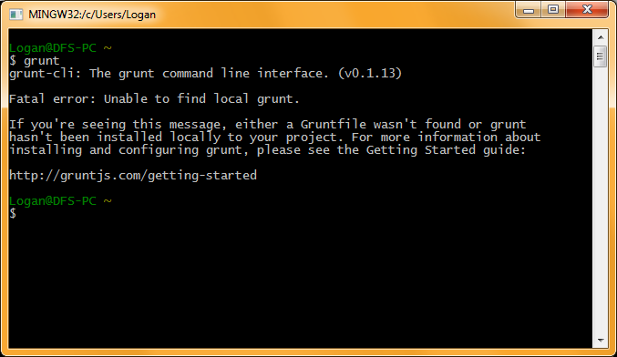

Why Minify?
Or for that matter, why bother with something like Grunt, Node, Require, Jasmine at all? Well, that largely depends on the scope and type of your project. Certainly, you don't want to waste valuable development time minifying JavaScript when you could be out there hacking away at some navigation panel that breaks everytime you resize it in IE 8. Sigh...
Yet, minification is a valuable process for almost any project with a significant amount of CSS, Sass, Less, or JavaScript files. Consider the following:
<link rel="stylesheet" type="text/css" href="/css/normalize.css">
<link rel="stylesheet" type="text/css" href="/css/style.css">
<link rel="stylesheet" type="text/css" href="/css/desktop.css">
<link rel="stylesheet" type="text/css" href="/css/tablet.css">
<link rel="stylesheet" type="text/css" href="/css/mobile.css">
<script rel="stylesheet" type="text/javascript" src="/js/jquery.js">
<script rel="stylesheet" type="text/javascript" src="/js/respond.js">
<script rel="stylesheet" type="text/javascript" src="/js/carousel.js">
<script rel="stylesheet" type="text/javascript" src="/js/slider.js">
This is not that uncommon of a sight. Even a small project has several stylesheets, JavaScript dependencies, and other required sources and plugins. Having something like the code above is fine for development - in fact, compartmentalizing JavaScript and stylesheets is a great way to avoid errors and isolate bugs. But for a production build, there is a slight problem.
Suppose the site you're woking on starts getting a lot of activity. Suddenly, load times start to increase, especially across weak connections like public WiFi or mobile networks. You gasp as load times increase from milliseconds to whole fractions of a second. Gasp! Why, you ask, why? Well, the server is spitting out a lot of files which may be filled with unnecessary comments and whitespace. Minify, concatenate, compress, and suddenly you can have something like the following:
<link rel="stylesheet" type="text/css" href="/css/styles.min.css">
<script rel="stylesheet" type="text/javascript" src="/js/main.min.js">
You breathe a sigh of relief as your production build now looks crisp, clean, and wonderful. Well, at least the header does...
Enter: Grunt.js
So, how can you make this magic happen without eating up precious minutes of your workflow? Grunt Task Runner, of course! Let's get started then, shall we?
The first step, unsurprisingly, is to grab Node.js. Installing Node is really easy, as it has installers for all major operating systems. I'll just ponder the meaning of the universe while you get Node set up...
Alright, good to go? Here's where the fun begins! Node has a built-in modules which can be installed using npm. That's how we're going to be installing Grunt. Even if you're very unfamiliar with the command-line, most of what we'll be doing with Node and Grunt are pretty straightforward. Navigate to whatever command line tool you use for your operating system and (with administrator privileges) type npm install grunt-cli -g. This installs Grunt's Command Line Interface, which will allow your command line tool to understand what a Grunt command is.
In fact, you can try this out right away. Enter grunt into the command line, and you should see something like this: 
Of course, Grunt will now be very confused, as it says you didn't specify a Gruntfile. Well, let's resolve that. In your working directory, create two files. The first should be called Gruntfile.js and the second should be called package.json. While the former is used for executing tasks via Grunt, the latter is used for project dependencies in Node. This will come into play later after Grunt is set up to actually do something.
Notice the fun little Gruntfile.js and package.json in the working directory. There are very strict specifications on how to set up your package.json, but for the sake of simplicity, you can set up your starter file like this:
{
"name": "grunt-demo",
"version": "0.0.0",
"author": "Logan Sobczak",
"description": "A fun description!"
}
To set up your dependencies for Grunt, run npm install grunt --save-dev.This will also create a directory called node_modules. You might get a few warnings, but you can ignore them for now. To set up Grunt, open up your Grunfile.js and plugin:
module.exports = function(grunt) {
grunt.registerTask('default', ['TASK']);
grunt.initConfig({
pkg: grunt.file.readJSON('package.json')
});
};
Modules
You'll notice that it this point, you still cannot actually run Grunt. Remember, Grunt is a task runner - it just does stuff for you. Right now, its default task is some task called TASK. This is a placeholder, and running grunt default or just grunt (default is assumed) will generate an error.
CSSMin
Let's start by minifying our CSS files. To do so, run the commandnpm install grunt-contrib-cssmin --save-dev. This will grab CSSMin, nice little minification module and install it to the working directory. Node will automatically include it as a dependency in package.json, but Grunt won't do anything with it to start.
Let's make some changes and set up the module. Inside your Gruntfile.js, add the following lines of code:
module.exports = function(grunt) {
grunt.registerTask('default', ['cssmin']);
grunt.initConfig({
pkg: grunt.file.readJSON('package.json'),
cssmin: {
combine: {
files: {
'css/styles.min.css': ['css/main.css', 'css/desktop-1000px.css']
}
}
}
});
grunt.loadNpmTasks('grunt-contrib-cssmin');
};
This does a few things. First, it sets up the target files of the CSS minifier's combine function. This could also be called build or dist, it's just that the task itself has to be called cssmin. In my working directory, the output is styles.min.css and the example input files are an array, main.css and desktop-1000px.css. The code they contain isn't very interesting...
But let's see what minification will do to them. To run our newly configured CSS minifier, set up your input and output files and directories and run grunt in the command line. If all goes well, you should see something like this:
If you get errors, check over the Gruntfile.js for syntax errors.
The output is stripped of whitespace and newline characters:
You can also use /*.css to target all CSS files in the source directory, minifying them into a single destination file.
Remember, though, using /*.css will gather all source files as they are listed, minifying them in order. If CSS files need to be minified in a particular order - for example, a normalizer must be loaded before a responsive framework, which both need to be loaded before custom styling - it might be better to list files sequentially in the file source array. This ensures that certain style rules in the minified CSS don't override style rules that were supposed to have higher precedence.
Uglify.js
In a very similar fashion as CSSMin, Uglify.js performs minification on JavaScript files. It's also easy to set up by first running npm install grunt-contrib-uglify --save-dev and changing a few lines of the Grunfile.js:
module.exports = function(grunt) {
grunt.registerTask('default', ['cssmin','uglify']);
grunt.registerTask('uglify', ['uglify']);
grunt.initConfig({
pkg: grunt.file.readJSON('package.json'),
cssmin: {
combine: {
files: {
'css/styles.min.css': ['css/*.css']
}
}
},
uglify: {
target: {
files: {
'js/main.min.js': ['js/jquery-2.1.1.js' , 'sample.js']
}
}
}
});
grunt.loadNpmTasks('grunt-contrib-cssmin');
grunt.loadNpmTasks('grunt-contrib-uglify');
};
You'll notice that the syntax is generally the same as the CSS minifier. Remember that each task supplied intogrunt.initConfig() must be separated by a comma. You can also specify new tasks, as has been done above. Now calling grunt uglify minifies the JavaScript but not the CSS. When using a large number of tasks in Grunt, it helps to break them apart. If you're only working on your JavaScript sources or Sass files, there's no need to recompile or minify the rest of your directory.
Remember that, as when combining multiple CSS files, Uglify works in order. This is especially important when dealing with jQuery plugins, which have to load after jQuery itself has loaded. If Uglify tacks jQuery onto the end of your minified JavaScript file, bad things will happen. Don't do it.
Watching the Watches
Finally, let's set up some watches. This is where Grunt really shines. Grab Grunt Watch by using npm install grunt-contrib-watch --save-dev and then by modifying Gruntfile.js:
module.exports = function(grunt) {
grunt.registerTask('default', ['watch']);
grunt.registerTask('uglify', ['uglify']);
grunt.registerTask('cssmin', ['cssmin']);
grunt.initConfig({
pkg: grunt.file.readJSON('package.json'),
cssmin: {
combine: {
files: {
'css/styles.min.css': ['css/*.css']
}
}
},
uglify: {
target: {
files: {
'js/main.min.js': ['js/jquery-2.1.1.js' , 'sample.js']
}
}
},
watch: {
scripts: {
files: ['js/*.js'],
tasks: ['uglify'],
},
css: {
files: ['css/*.css'],
tasks: ['cssmin'],
},
},
});
grunt.loadNpmTasks('grunt-contrib-cssmin');
grunt.loadNpmTasks('grunt-contrib-uglify');
grunt.loadNpmTasks('grunt-contrib-watch');
};
A few things have changed. For one, 'default' no longer executes the other tasks. Instead, it starts a watch. Watch does pretty much what you would expect: it watches your specified directories for additions and deletions or changes in the files themselves. When that happens, watch fires off another task and then waits for more changes.
Now when you run grunt in the console, you'll notice that this happens:
It's a good time to remember that ctrl+c will kill a process in the terminal, because watch will continue to watch for changes until you close the window or kill it. You will also notice that adding a line to either your CSS files or JavaScript files will cause it to re-minify both.
Watch is especially useful when making changes to a site that runs off the minified CSS or JavaScript. For example, you can break apart your CSS into files based on screen size, edit them as needed, and refresh your browser to view changes without having to manually re-minify your main.min.css file. You can even host a local server using something like Grunt Connect and then use watch's live reload option.
Troubleshooting
One thing I have to say about Grunt is that the documentation for certain plugins in sometimes unclear. That said, here's an important thing you should note while setting up your Gruntfile.js.
Consider this innocent mistake:
module.exports = function(grunt) {
grunt.initConfig({
pkg: grunt.file.readJSON('package.json'),
cssmin: {
combine: {
files: {
'css/styles.min.css': ['css/main.css', 'css/desktop-1000px.css']
}
}
}
});
grunt.loadNpmTasks('grunt-contrib-cssmin');
grunt.registerTask('cssmin', ['cssmin']);
};
The only difference here is that th e task cssmin is registered after the config and load. Running grunt cssmin will produce the following:
This causes a recursive call of cssmin until overflow occurs. It can be solved by prefixing the task (like using task-cssmin as the task name), or by just placing the declaration of the task before it is loaded and initialized. The latter is much safer and less prone to error.
Doing this for the watch task causes the puzzling situation of a watch executing without changes to the working directory and promptly closing. This, surprisingly, was not stressed in other documentation. Do not register the tasks after they are loaded. There, now everything is clear.
More to It
There is a lot more to what Grunt can do than was covered here, even in the plugins I covered. The options are fantastic, and using Node to install everything makes the whole process very painless. This is intended to be pretty basic, but it gets you setup with Grunt in a way that's meaningful for most projects. Try out of some of these other plugins, if you're interested.
Autoprefixer
Have you ever stared a transition or transform style rule and suddenly realized that you should probably throw a vendor prefix into your CSS? Well, with Autoprefixer, you no longer have to worry about looking up what style rules need those -o-,-moz-, and -webkit- prefixes. By using autoprefixer at build time, vendor prefixes are automatically added to the CSS, ensuring maximum cross-browser compatibility for newer CSS elements.
UnCSS
If you're using a framework such as Twitter Bootstrap or jQuery Mobile, chances are you aren't using all the CSS rules provided by these rather expansive frameworkjygrewzaQ`1y, the unused CSS rules would just float around in the nether of your compiled CSS, wasting precious bytes of space with unneeded .button-wide or .well-large style rules. With UnCSS, you can automatically remove these items from you CSS at build time, further shrinking the file size of your CSS and automatically cleaning up your code. And if you feel like using those elements sometime later, they still exist in your framework's stylesheets, just not on the compiled and compressed build CSS. UnCSS can also remove style elements that you might have added for testing purposes but forgot to remove. This is especially common on larger projects where multiple developers might accidentally commit test styles without commenting them out or deleting them.
Grunt Connect
If you want to enable the live reload for Grunt Watch, you'll need to pick up Grunt Connect. This lightweight local server allows live reload to function with watches and also enables things like AJAX and PHP to function locally. It's a great tool, though Node itself has a simple http server which works, as well.
Ultimately, the name of the game is automation. The less you have to do on your own as far as getting files minified, prefix, and organized, the better. As projects grow in scope, task runners like Grunt become more and more useful.